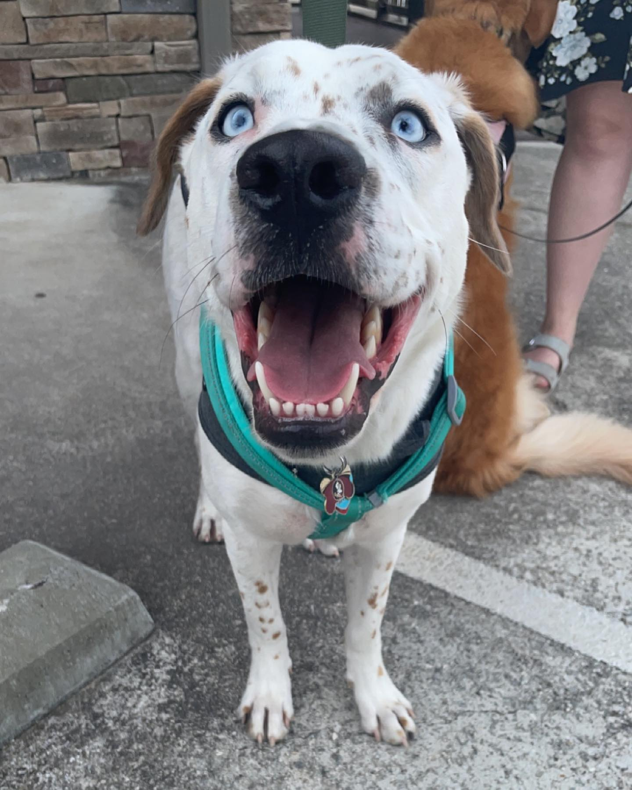

My Firstborn
Bobby "Bowden"
Two years ago I finally had my first son... with four paws and a tail. Raising Bowden from a pup taught me lessons in responsibility I never knew I needed. The potty training and sleepless nights were trials that have molded me into a more responsible adult. Our favorite activities include hiking and playing fetch. Bowden is family and has always found ways to brighten my days. Here's to many more games of tug-of-war son. You may beat me... one day.